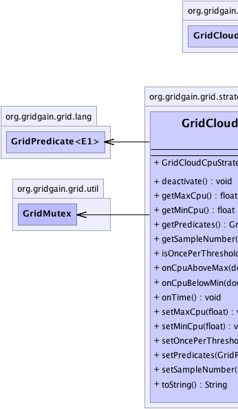
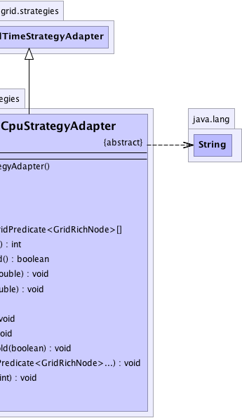

org.gridgain.grid.lang.GridMetadataAwareAdapter
org.gridgain.grid.GridCloudEnabledAdapter
org.gridgain.grid.strategies.GridCloudTimeStrategyAdapter
org.gridgain.grid.strategies.GridCloudCpuStrategyAdapter
org.gridgain.grid.lang.GridMetadataAwareAdapter
org.gridgain.grid.GridCloudEnabledAdapter
org.gridgain.grid.strategies.GridCloudTimeStrategyAdapter
org.gridgain.grid.strategies.GridCloudCpuStrategyAdapter
|
GridGain™ 3.1.1c
Community Edition |
|||||||||
| PREV CLASS NEXT CLASS | FRAMES NO FRAMES | |||||||||
| SUMMARY: NESTED | FIELD | CONSTR | METHOD | DETAIL: FIELD | CONSTR | METHOD | |||||||||
java.lang.Object
public abstract class GridCloudCpuStrategyAdapter
Cloud strategy that provides custom actions based on average CPU load on specified subset of nodes. This strategy supports maximum and minimum values for CPU load as well as number of measurements that should all consequently be above or below the threshold for the actions to be triggered (to smooth out the fluctuations near the threshold).
| Wiki | |
| Forum |
|  |  |
| Field Summary |
|---|
| Fields inherited from class org.gridgain.grid.strategies.GridCloudTimeStrategyAdapter |
|---|
DFLT_FREQ, grid, log |
| Constructor Summary | |
|---|---|
GridCloudCpuStrategyAdapter()
|
|
| Method Summary | |
|---|---|
void |
deactivate()
Called on cloud coordinator stop. |
float |
getMaxCpu()
Gets CPU usage upper bound. |
float |
getMinCpu()
Gets CPU usage lower bound. |
GridPredicate<GridRichNode>[] |
getPredicates()
Gets predicates filtering nodes this strategy is working on. |
int |
getSampleNumber()
Gets sample number. |
boolean |
isOncePerThreshold()
Gets once per threshold flag. |
abstract void |
onCpuAboveMax(double cpuAvg)
Called when CPU average exceeds configured GridCloudCpuStrategyAdapter.maxCpu value. |
abstract void |
onCpuBelowMin(double cpuAvg)
Called when CPU average becomes less than configured GridCloudCpuStrategyAdapter.minCpu value. |
void |
onTime()
Called on every time period based on configured frequency. |
void |
setMaxCpu(float maxCpu)
Sets CPU usage upper bound. |
void |
setMinCpu(float minCpu)
Sets CPU usage lower bound. |
void |
setOncePerThreshold(boolean once)
Sets flag indicating whether strategy must be triggered only once when threshold was crossed. |
void |
setPredicates(GridPredicate<GridRichNode>... p)
Sets predicates filtering nodes this strategy is working on. |
void |
setSampleNumber(int num)
Sets samples number. |
String |
toString()
|
| Methods inherited from class org.gridgain.grid.strategies.GridCloudTimeStrategyAdapter |
|---|
activate, getFrequency, setFrequency |
| Methods inherited from class org.gridgain.grid.GridCloudEnabledAdapter |
|---|
getCloudIds, isEnabledFor, setCloudIds |
| Methods inherited from class org.gridgain.grid.lang.GridMetadataAwareAdapter |
|---|
addMeta, addMetaIfAbsent, addMetaIfAbsent, allMeta, clone, copyMeta, copyMeta, hasMeta, hasMeta, meta, putMetaIfAbsent, putMetaIfAbsent, readExternalMeta, removeMeta, removeMeta, replaceMeta, writeExternalMeta |
| Methods inherited from class java.lang.Object |
|---|
equals, finalize, getClass, hashCode, notify, notifyAll, wait, wait, wait |
| Methods inherited from interface org.gridgain.grid.GridCloudEnabled |
|---|
isEnabledFor |
| Methods inherited from interface org.gridgain.grid.GridMetadataAware |
|---|
addMeta, addMetaIfAbsent, addMetaIfAbsent, allMeta, copyMeta, copyMeta, hasMeta, hasMeta, meta, putMetaIfAbsent, putMetaIfAbsent, removeMeta, removeMeta, replaceMeta |
| Constructor Detail |
|---|
public GridCloudCpuStrategyAdapter()
| Method Detail |
|---|
public void deactivate()
deactivate in interface GridCloudEnableddeactivate in class GridCloudTimeStrategyAdapterpublic abstract void onCpuAboveMax(double cpuAvg)
GridCloudCpuStrategyAdapter.maxCpu value.
cpuAvg - CPU load average over grid nodes.public abstract void onCpuBelowMin(double cpuAvg)
GridCloudCpuStrategyAdapter.minCpu value.
cpuAvg - CPU load average over grid nodes.public void onTime()
onTime in class GridCloudTimeStrategyAdapterpublic void setMaxCpu(float maxCpu)
GridCloudCpuStrategyAdapter.onTime() is called.
maxCpu - Max CPU usage.public float getMaxCpu()
public void setMinCpu(float minCpu)
GridCloudCpuStrategyAdapter.onTime() is called.
minCpu - Min cpu usage.public float getMinCpu()
public void setSampleNumber(int num)
This method can be called before and after activation. The change
will take an effect next time method GridCloudCpuStrategyAdapter.onTime() is called.
num - Samples number. Value must be greater than zero.public int getSampleNumber()
public void setPredicates(GridPredicate<GridRichNode>... p)
GridCloudCpuStrategyAdapter.onTime() is called.
p - Optional set of predicates that will define a subset of nodes
this strategy is working on.public GridPredicate<GridRichNode>[] getPredicates()
public boolean isOncePerThreshold()
false meaning that it will trigger
every number of measurements as long as CPU average stays outside
of the threshold.
true if once per interval, false otherwise.public void setOncePerThreshold(boolean once)
false meaning that it will trigger every number
of measurements as long as CPU average stays outside of the threshold. If set to true the
strategy will be triggered only once while threshold was crossed and CPU average doesn't cross it
again.
once - Once per interval flag.public String toString()
toString in class GridCloudTimeStrategyAdapter
|
GridGain™ 3.1.1c
Community Edition |
|||||||||
| PREV CLASS NEXT CLASS | FRAMES NO FRAMES | |||||||||
| SUMMARY: NESTED | FIELD | CONSTR | METHOD | DETAIL: FIELD | CONSTR | METHOD | |||||||||
|
GridGain - High Performance Cloud Computing
|
|

|
|